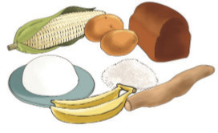
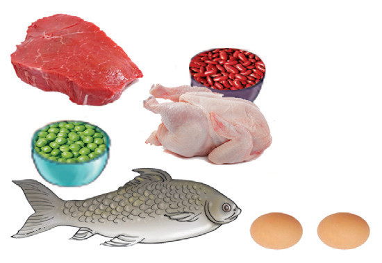

Sura ya Kumi na Moja
Mlo kamili
Katika sura hii, utajifunza namna ya kubaini makundi ya vyakula yanayounda mlo kamili. Pia, utajifunza namna ya kupanga mlo kamili na kubaini umuhimu wake katika mwili wa binadamu. Umahiri utakaoupata katika sura hii, utakuwezesha kuzingatia kanuni za afya na lishe bora kwa kula mlo kamili.
Mwili wa binadamu unahitaji kuwa na afya bora. Afya hiyo hutokana na kula mlo kamili.
Makundi ya vyakula
Tunakula chakula kwa kuzingatia virutubisho vinavyohitajika mwilini. Virutubisho hivyo vinakuwa na uwiano na kiasi sahihi kwa mahitaji ya mwili. Uwiano sahihi wa virutubisho vyote muhimu katika chakula vinaitwa mlo kamili. Mlo kamili unaundwa na makundi matano ya vyakula.

Vyakula vya wanga ni kama mahindi, mchele, mtama, muhogo, viazi, na ndizi. Chakula cha wanga huupatia mwili nguvu.

Vyakula vya protini ni kama vile nyama, samaki, mayai, maharage, na maziwa. Chakula cha protini hutusaidia kujenga na kukuza mwili.